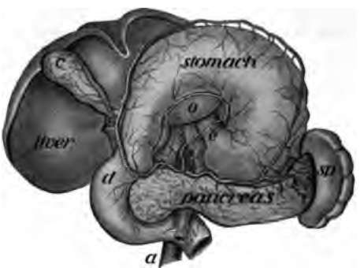

How Food Is Used By The Body. Part 3
Description
This section is from the book "The Human Body And Health", by Alvin Davison. Also available from Amazon: The Human Body and Health.
How Food Is Used By The Body. Part 3
Fig. 33. A tiny block out of the stomach wall, a, the mucous membrane; c and d, the muscles; h, gastric glands; m and n, blood tubes to the glands; e, mouth of glands within the stomach.
Gastric Juice
The gastric juice is made to mix with the food by the action of the stomach muscles, which squeeze the contents back and forth. If the stomach is too full, there is no room for the food to move about and mix with the juices. Sickness called indigestion may be the result. The quickest relief is given by vomiting.
Some persons do not have enough gastric juice to digest even a small quantity of food. They can nearly double the flow of gastric juice by chewing the food twice as long as usual. Funny stories and pleasant experiences related at meal time also help digestion.
After remaining in the stomach from one to five hours, the food is like thick gravy and is called chyme. It is then pushed in small quantities through the gateway formed by a circular muscle, into the intestine.
The Intestines
The small intestine receives the food from the stomach. It is a coiled tube about twenty feet long (Fig. 34). It fills up much of the abdominal cavity and is heid in place by a thin glistening membrane attached to the region of the backbone. The wall of the intestine is like that of the stomach. The outer part is of muscle and the lining is mucous membrane made largely of tiny, tubelike glands. The mucous membrane is much wrinkled into cross folds, while over its whole surface stick out millions of tiny fingerlike projections called villi (Fig. 36).
Fig. 34. The stomach and intestines; 1. stomach; 5, 7, 8, 9, 10. 11. large intestine; 3, small intestine; 4, entrance of small intestine into large one; 12, spleen.
Fig. 35. Piece of small intestine cut open to show wrinkling of inner coat bearing villi.
A few inches below the stomach, ducts from the pancreas and liver empty into the intestine. The secretion of the pancreas is pancreatic juice, and that of the liver is bile.
Fig. 36. A tiny block cut from the wall of the intestine showing villi and the mouths of glands at a; b, villus cut open to show the lacteal e and blood tubes m for absorbing food.
The large intestine receives the waste part of the food from the small intestine, and retains it a few hours until some of the water is absorbed. This waste matter should be expelled from the body at about the same time each day. Neglecting to do this, often causes serious illness.
Intestinal Digestion
The liquid food is kept moving in the small intestine by the movement of its muscular walls. In this way the food is well mixed with the bile and pancreatic juice, and also the other juice formed by the intestinal glands. The food is acted on and changed by these several juices into a dark fluid called chyle. It is then ready to be received by the blood vessels, and carried to the heart, toes, fingers and other parts of the body.
Nearly all the nourishment received by the body is taken from the food while in the small intestine. The waste or unused portion of the food, with some of the bile, then passes on into the large intestine, from which it should be expelled once each day to avoid the collection of too much poisonous refuse causing a sluggish action of the bowels called constipation.
Fig. 37. Showing how food goes from the intestines into the blood.
The best means of preventing constipation is by exercise, the drinking of much water, especially in the morning before breakfast, and the eating of fruits.
How The Food Enters The Blood
The chyle of the intestine is so watery that it will pass through the thin membrane lining the intestine. The cells forming the membrane help the passage or absorption of the food. The membrane is full of tiny blood tubes, with walls much thinner than tissue paper, so that the watery food can get through them. The absorbing surface is much increased by the cross folds of the membrane, and the millions of tiny outgrowths, the villi. These contain networks of blood tubes to receive the food. It is then carried to the liver. From here it goes to the large vein entering the heart, which sends it with the blood throughout the body.
In the center of each villus is another kind of tube called a lacteal, because it takes up the milky or fatty parts of the food. This lacteal unites with thousands of similar lacteals from other villi, to carry their food to a duct passing up along the backbone to enter a blood tube in the neck. Since the villi take up most of the food they are called absorbents. A little food and considerable alcohol may be absorbed by the blood tubes in the wall of the stomach.
Fig. 38. The stomach pulled upward to show the pancreas; d, intestine; sp, spleen; c, gall bladder.
Pancreas And Liver
The pancreas, called by the butchers sweetbreads, is a long, flat, pinkish gland, just back of the stomach (Fig. 38). It sends about a quart of juice into the intestine daily. This is the most important of all the digestive juices, because it acts on all kinds of food, and prepares them to enter the blood.
Continue to:
- prev: How Food Is Used By The Body. Part 2
- Table of Contents
- next: How Food Is Used By The Body. Part 4